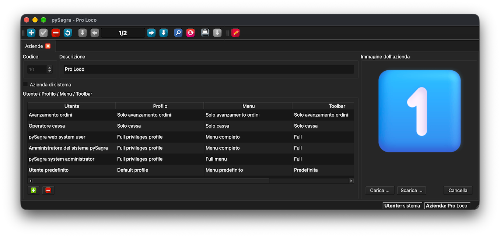

Un'azienda si può identificare con l'ente o società che gestisce le sagre ed è costituita da un insieme di dati separato da tutte le altre aziende: articoli, eventi, ordini, impostazioni, parametri di stampa, ecc. Ogni utente lavora in un'azienda alla volta e la cambia con Cambia azienda. Per operare in un'azienda gli utenti devono essere abilitati attraverso specifiche impostazioni modificabili in questo archivio o nell'archivio degli utenti. Tipicamente solo gli utenti amministratori possono operare su questa scheda.

Impostazioni dell'azienda:
Una nuova azienda si crea con un codice, una descrizione e il profilo, menu e toolbar con cui l'utente corrente potrà accedervi.
E' possibile inserire dati (reparti, articoli, ecc.) in un'azienda partendo da un'altra usando lo Strumento di copia.